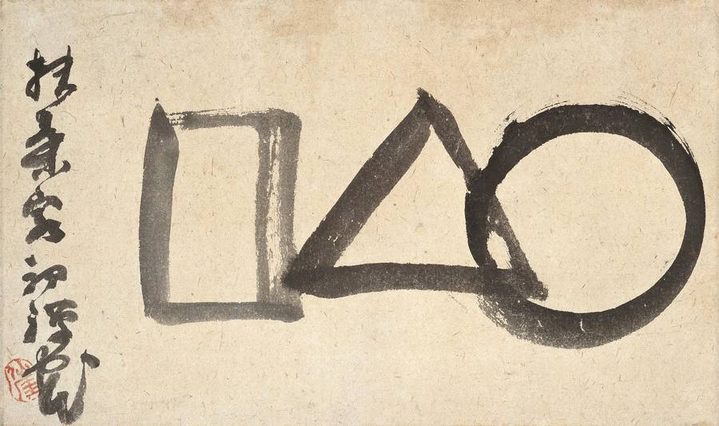
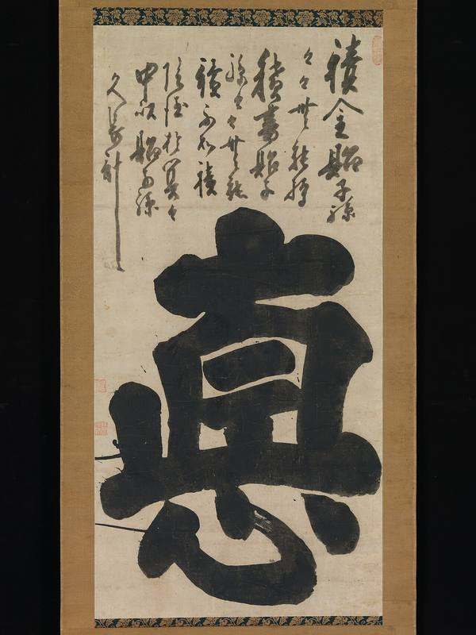
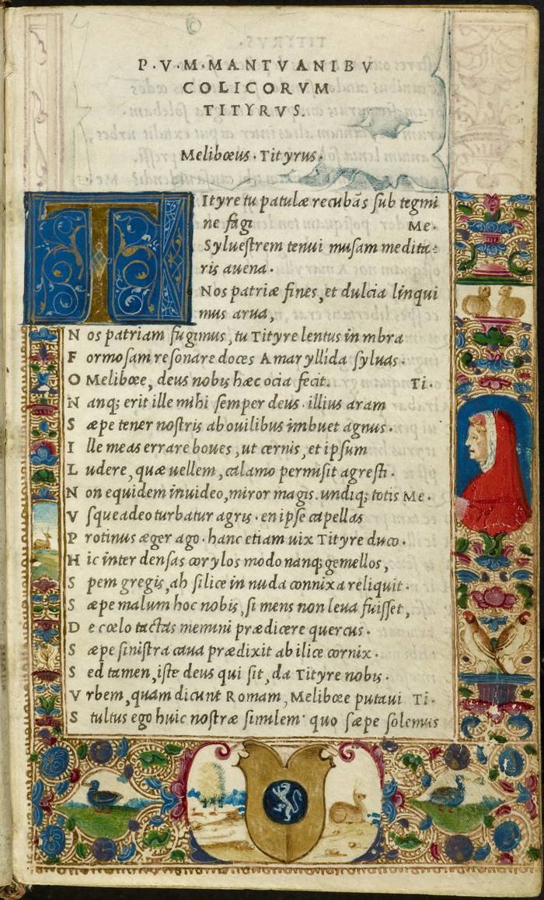
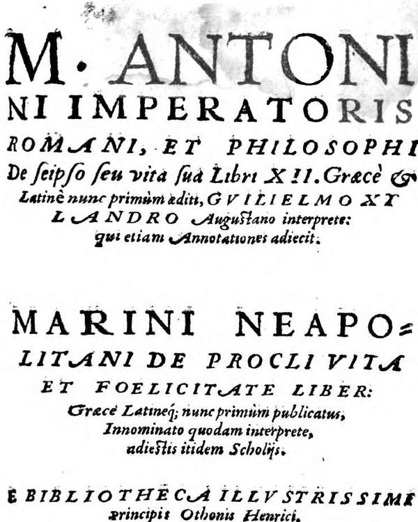

Faith in Mind
Attributed to Seng Ts’an · translated by Master Sheng-yen with Paul KennedyA short poem on the mind that does not pick and choose.
Shodoka
Attributed to Yung-chia Hsuan-chueh · translated by Robert Aitken and Eido ShimanoThe Song of Enlightenment: sixty-four verses on seeing one’s own nature, sung by someone who has woken up.
The Gateless Gate
Wumen Huikai (Mumon Ekai) · translated by Katsuki SekidaThe Mumonkan: forty-eight koans, each with a comment and a verse by Wumen (Mumon), beginning with Jōshū’s “Mu”. With the Chinese.The Diamond Sutra
Translated by Thich Nhat HanhThe Buddha and Subhuti on freeing all beings while holding on to no idea of self, of beings, or even of the teaching.The Diamond Sutra, Red Pine’s translation
Translated by Red Pine (Bill Porter)The same sutra from the Sanskrit, keeping its repetitions and its full closing verse.The Dhammapada
Translated by Thanissaro Bhikkhu423 short verses from the Pāli Canon, attributed to the Buddha, on the mind and the path.
On the Shortness of Life
Seneca · translated by John W. Basore“It is not that we have a short space of time, but that we waste much of it.”
Meditations
Marcus Aurelius · translated by Gregory HaysA Roman emperor’s notes to himself on how to live, with Rufus Pollock’s notes in the margin.